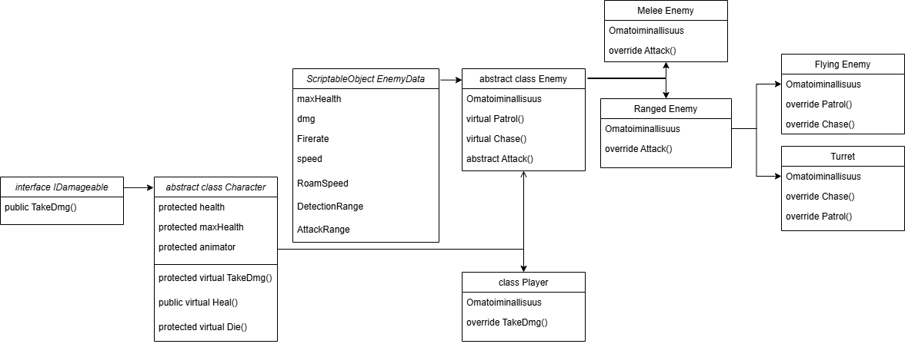
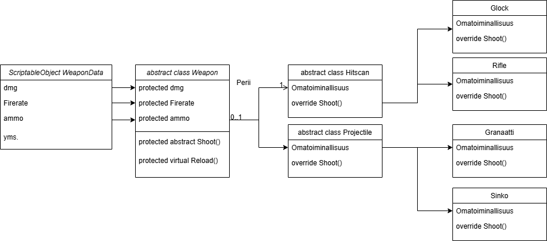
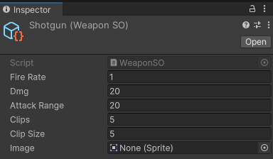

Name:
Delusions and Delicasies
Type:
School project
Members:
Oskar Junnola
Konstantinos Verykios
Henry Sanchez
Tuomas Tuuri
Timeframe:
8 months
Role:
Programmer
Delusions and Delicasies
Information
Delusions and Delicasies is a first person arena shooter game created for PC with Unity with C# being the programming language used. The game is intended for players who enjoy games with simple graphics and exiting gameplay. As of now Delusions and Delicasies has a working Demo scene that is playable with the core mechanics implemented.
The game is set on a candy world with colorful arenas. The player has to fight enemies roaming in the delightful world trying to collect cake pieces to escape to the real world.
After showcasing the demo at Demoday Vol. 7, some issues were discovered and the next step for the project is to fix the remaining issues. After that we'll start implementing more features, refining features and UI and add more content like weapons, models, audio and more maps.
Roles
Oskar Junnola: programmer
Henry Sanchez: 3D modeling, programmer
Tuomas Tuuri: 3D modeling, programmer
Konstantinos Verykios: 3D modeling, Level design
development process 1.1.2025 - 31.5.2025
At the start we started planning the basic details of the project. Including menchanics and enemy types. I was tasked with creating the enemies' functionality like patrol, chase and attacking. Konsta worked on models, Henry worked on player movement and Tuomas worked on creating the basic weapon functionality as well as the basic UI functionality. After the base functionalities were done I took over the programming of the project and Henry and Tuomas moved on to 3D modeling.
I created a very simple UI with menus. The enemy functionality started with creating a IDamageable interface and a Character base class. Then I created an Enemy class and a ranged enemy class that derives from the enemy class and a ScriptableObject for the enemies. See image of the structure. I then added patrol and chase states and their functionality for the enemies.
After Tuomas was ready with the basic functionality of the weapons. I created a weapon base class, a ScriptableObject for it, and then two derived classes hitscan and projectile weapons. from which all weapons will inherit from. See image of the structure. Then modified the weapon scripts to include the weapon classes. Then weapons were modified to fit both player and enemies. The UI was improved by adding health bars and ammo to it. I then created pickable items a health pack and a ammo box. Added health seeking feature for low health enemies.
I then started working on enemy spawning and creating the stage/arena functionality. Each stage has maxinum enemy count. The stages inizialise on game start by spawning enemies to them and then deactivating the stage via unityEvents. If enemies are killed the stage starts a timer to spawn new enemies.
Next I started creating different types of weapons. A flamethrower, a shotgun and a rocket laucher. The flamethrower needed a damage-over-time effect. for the rocket laucher I created a bullet class with it's own functionality. Projectiles derive from bullet class.
A field of view was added to the enemies. I then started creating the weapon switching and weapon pick up functionality. Weapon holder was created which manages the players weapons. A weapon pickup script was created to allow interacting with the weapons. Because of multiple weapons images for previous current and next weapons were added to the UI.
I then continued working on the stages and the game mode. I added doors to lock the player to the arena. Added the cake piece as a win condition. Lastly before Demoday Vol.7 new weapons with animations and models were added, animations and gameplay loop were polished further and finalized.
development process 1.8.2025 - 31.12.2025
This time I mostly worked on other projects, but got some work done to this project as well. I started by reseaching about navmesh and it's agents. The issue we encountered during Demoday vol. 7 causing the enemies to sometimes get stuck when their next walkpoint is set to a platform above or below their current platform. The solution to this is to add navmesh's off-mesh links to link the two platforms.
Next I created some visuals. First an idication of damage done to enemies. When the enemy is hit it creates a little pop up text with the damage on it. Then I started creating a Boss to the game. For this I created a boss stage which spawns only the boss. When entering a boss stage an UI pops up with the boss' HP. The boss will also has some special attacks. but for now it is a Bigger enemy. Lastly I did some research on the fying enemy and melee weapons.
Core mechanics
The map is devided into stages or arenas. Each stage has a number assigned to it. When spawning enemies they are assigned to a stage by setting a stage number for them. When entering a stage the game will lock the player into the stage by closing all doors. An event is called which enables all enemies with that stage number and deactivating all other enemies.
The numbers of enemies killed in the stages is being tracked. When the number reaches a certain threshold the stage will activate it's cake piece to be collected. After collecting the piece, doors will open letting the player enter the next stage. The player wins by collecting all cake pieces.
For now the stages have health packs and ammo boxes scattered around with a respawn timer on the health packs.
Player
Above is a simple sketch of the character class structure made to demonstrate the hierarchy. Player class inherit from character base class. The player has multiple movement options, double jump and a dash with invulnerability during the dash. The player has a few weapon slots available is able to switch between weapons. The weapons can be picked up from the ground. If all of the weapon slots are in use the current weapon is thrown to the ground. Current previous and the next weapons are shown on the UI.
Weapons
Above is a simple sketch of the weapon class structure made to demonstrate the hierarchy. The game has 3 types of weapons: melee, projectile and hitscan weapons. All weapon types have the same base class from which they inherit basic functionality. The basic weapon class structure is shown in the picture above. The basic functionality is a reload and a fire function which is called from the user of the weapon. Both enemies and the player use the same weapon scripts. Enemies have a variant of the weapon prefabs with a boolean IsPlayer set to false. IsPlayer variable controls the ammo in the UI which is called when fired. Damage is dealt by checking if the object hit has a IDamageable interface.
Weapons can be picked up. When the weapons are on the ground they will have a weapon pickup script and weapon script disabled. It's rigidbody is set to dynamic and collider to non-trigger. when picked up by the player it is set as a child of the weaponholder object. It's rigidbody is set to kinematic and collider to trigger. The weapon script is enabled and weapon pickup is removed. When dropped it returns to it's original state.
Weapon data are taken from a ScriptableObject. the base ScriptableObject is for hitscan and melee weapons and the projectile weapon uses a derived class with the bullet prefab and bullet speed variables.
Hitscan weapons fire a raycast in to the direction the user is facing.
Projectile weapon fires a object with a bullet class which data is initialized when spawned. Bullet class has a damage variable and a life time that is calculated from the weapon's range and the bullet's speed.
Melee weapons are still on development but thought process is as follows: When the fire function is called the weapon will call for the an animation to play which then activates a function that check for enemies in front of the user.
Enemies
All enemies inherit from character base class. Enemies use navmesh to move in the arena and they have three different states. Roam/patrol: a random point is taken within their roaming range, that point is set as the next destination for the navmesh agent. If the player enters the enemy's detection range. The enemy will start to chase the player. If the enemy gets within it's attack range the enemy will stop and start to attack the player. In the attack state the enemies shoot a raycast at the direction they are facing and checking if it hits the player. If the ray hits a wall or an obstacle they will go around the object to try and find the player.
Enemies have a feature that if they are low enough and if the player is not at the attack range, they will try to find a health pack from the map and take it healing them.
Currently there are only one type of enemy, ranged, because of melee weapons still being under development. Ranged enemies use a projectile weapon. In the demo there are ordinary ranged enemies that roam and chase the player and turrets that stay still and attack on sight.
A flying enemy is also in development. It is a ranged enemy with a different type of movement (not navmesh based). Movement works but is not ready at the moment. This will be developed further in the future.
Issues and solutions
There were only a few small issues during the development. First was a problem with collision detection with the enemies when they were moving. The colliders didn't move correctly because the rigidbody interfering with the navmesh agent's movement. This was simply repaired by setting the enemy's rigibody to kinematic.
The next issue occured when creating a simple moving platform. When the player entered the platform the player wouldn't move with it. The solution was found from a question asked by CracksisT (2010) in the unity's community discussions website. The object entering the moving platform is set as a child of the platform and then removed when leaving.
During demoday an issue with the enemy's navigation was encountered. When the arena had multiple height levels, the roaming point would sometimes pick a point from inside of a box where the agent couldn't move to. This caused the agent to stay still and would only move when the player came into detection range. At the time this has not been repaired because of schedule problems but will be the next step in th edevelopment.
Gameplay
references
CracksisT. 2010. How to get a Character to move with a moving platform ? Discussions. Community. Unity. WWW-document. Available at: https://discussions.unity.com/t/how-to-get-a-character-to-move-with-a-moving-platform/1720. [Accessed 25.5.2025].
Icons from Font Awesome